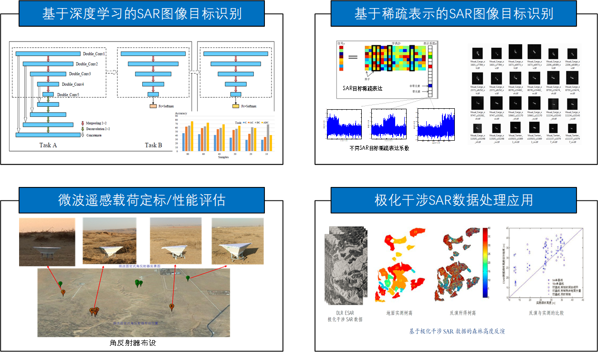

周勇胜，工学博士，教授，硕士生导师。2010年毕业于中国科学院电子学研究所信号与信息处理专业，获工学博士学位。
2010年至2019年于中科院光电研究院工作。2019年进入北京化工大学信息科学与技术学院工作，主要讲授《数字信号处理》、
《Python语言程序设计》、《遥感图像处理及应用》等课程。主要科研方向为合成孔径雷达（SAR）图像目标检测与识别、
极化/极化干涉SAR数据处理应用、微波卫星/航空遥感载荷定标与性能检测等，主持国家重点研发计划课题/子课题、
国家自然科学基金面上基金/青年基金等国家纵向项目以及横向项目10余项。发表文章40余篇，授权专利10余项。
招生专业 Admissions Major
欢迎信息与通信工程/计算机科学与技术/控制科学与工程等相关专业的同学发邮件咨询！
学术博士：计算机技术与智能系统、人工智能
工程博士：待定
硕士招生：欢迎电子信息工程/计算机科学与技术/人工智能/通信工程等相关专业的同学保送、报考！
学术硕士：信息与通信工程（02图像解译与智能处理）、计算机科学与技术（03图像智能信息处理算法研究）
专业硕士：电子信息（新一代电子信息技术-02遥感信息处理）、电子信息（计算机技术-05图像智能信息处理算法研究）
主要科研项目
| 项目名称 |
项目来源 |
| 岛礁和海上构筑物多尺度信息综合提取技术 |
国家重点研发计划课题 |
| 新体制星载SAR系统定标方法与高精度误差补偿技术 |
国家重点研发计划子课题 |
| 无人机载极化干涉SAR森林高度反演方法研究 |
国家自然科学基金青年项目 |
| 复杂自然场景下微波凝视关联图像质量评价技术 |
国家863计划子课题 |
主要论文
Fan Zhang, Yunchong Wang, Jun Ni,
Yongsheng Zhou*
, Wei Hu. SAR Target Small Sample Recognition based on CNN Cascaded Features and AdaBoost Rotation Forest. IEEE Geoscience and Remote Sensing Letters, 2020 , 1-5.
Fan Zhang, Zhenzhen Fu,
Yongsheng Zhou*
, Wei Hu and Wen Hong. Multi-aspect SAR target recognition based on space-fixed and space-varying scattering feature joint learning. Remote Sensing Letters, 2019, 10(10), 998-1007.
Yongsheng Zhou
, Chuanrong Li*, Lingli Tang, Lingling Ma, Qi Wang. A permanent bar-pattern distributed target for microwave image resolution analysis. IEEE Geoscience and Remote Sensing Letters, 2017, 14(2): 164-168.
周勇胜
, 马灵玲, 王彩云, 宋庆君. 三维成像微波高度计图像质量分析, 第五届微波遥感技术研讨会, 普洱,2017.10.11-10.13.
Yongsheng Zhou
, Chuanrong Li, Lingli Tang, Caixia Gao, Dongjin Wang, Yuanyue Guo. Performance analysis of new types of reference targets based on spaceborne and airborne SAR data, 18th International Conference on Remote Sensing, Dubai, UAE, 2016.4.8-4.9.(最优论文)
周勇胜
, 向卫力, 汪琪, 李晓辉, 李传荣. 面向SAR目标识别的稀疏字典学习方法, 第三届成像雷达对地观测高级学术研讨会, 长沙, 2016.11.15-11.18.
Yongsheng Zhou
, Chuanrong Li, Lingling Ma, Machael Ying Yang. Improved trihedral corner reflector for high-precision SAR calibration and validation, 2014 IEEE Geoscience and Remote Sensing Symposium, Quebec City, QC, Canada, 2014.7.13-7.18.
Yongsheng Zhou
, Chuanrong Li, Lingling Ma, Ning Wang, Qi Li, A Topographic correction method for forest height retrieval from polarimetric interferometric radar images, 2013 IEEE International Geoscience and Remote Sensing Symposium, Melbourne, 2013.7.21-7.26.
Yongsheng Zhou
, Wen Hong, Yanping Wang, Yirong Wu. Maximal effective baseline for polarimetric interferometric radar forest height estimation, Science China Information Sciences, 2012, 554：867-876.
Yongsheng Zhou
, Qi Wang, Lingling Ma, Chuanrong Li, Lingli Tang, Yaokai Liu, Quality analysis for images acquired by a new staring correlation imaging technique, 2012 IEEE International Geoscience and Remote Sensing Symposium, Munich, 2012.7.22-7.27.
Yongsheng Zhou
, Mei Zhou, Lingli Tang, Chuanrong Li, Performance analysis of weak target detection via ground -based radar, International Symposium on Lidar and Radar Mapping, Nanjing, 2011.5.26-5.29.
周勇胜
, 洪文,王彦平, 曹芳, 吴一戎. 基于RVoG模型的极化干涉SAR最优基线分析. 电子学报. 2008, 36(12): 2367-2372.
Yongsheng Zhou
, Wen Hong, Fang Cao, Lu Bai. Potential performance of the Chinese X-band airborne Pol-InSAR. 2008 MOST-ESA Dragon 1 Final Results and Dragon 2 Kick Off Symposium (Dragon 2008), Beijing, 2008.4.21-4.25.
Yongsheng Zhou
, Wen Hong, Yanping Wang, Yirong Wu, Cao Fang. Baseline analysis of polarimetric SAR interferometry. 1stAsian and Pacific Conference on Synthetic Aperture Radar, Huangshan, China, 2007.11.5-11.9. (最优论文)
研究成果
